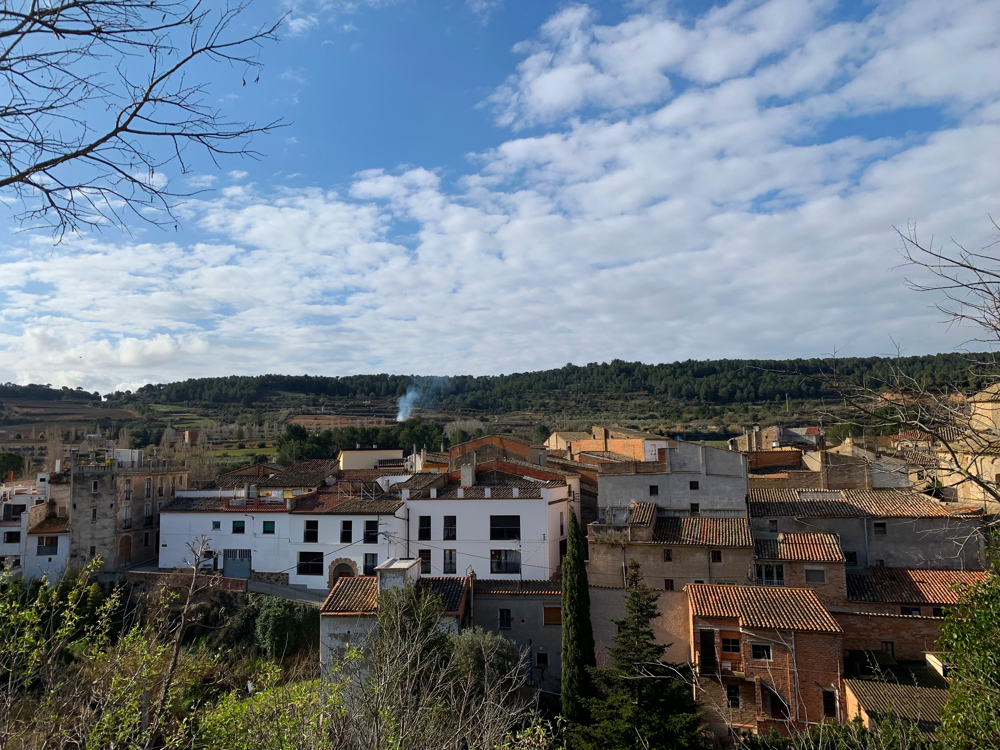

Torrelavit és un municipi de la comarca de l’Alt Penedès, a la província de Barcelona, que està al nord de Vilafranca del Penedès, al límit amb la comarca de l’Anoia.

Limita al nord amb els termes municipals de Cabrera d’Anoia i de Piera; al sud amb el Pla del Penedès i Font-rubí; a l'est amb Sant Sadurní d'Anoia i Subirats; i a l’oest amb Sant Quintí de Mediona i Sant Pere de Riudebitlles.